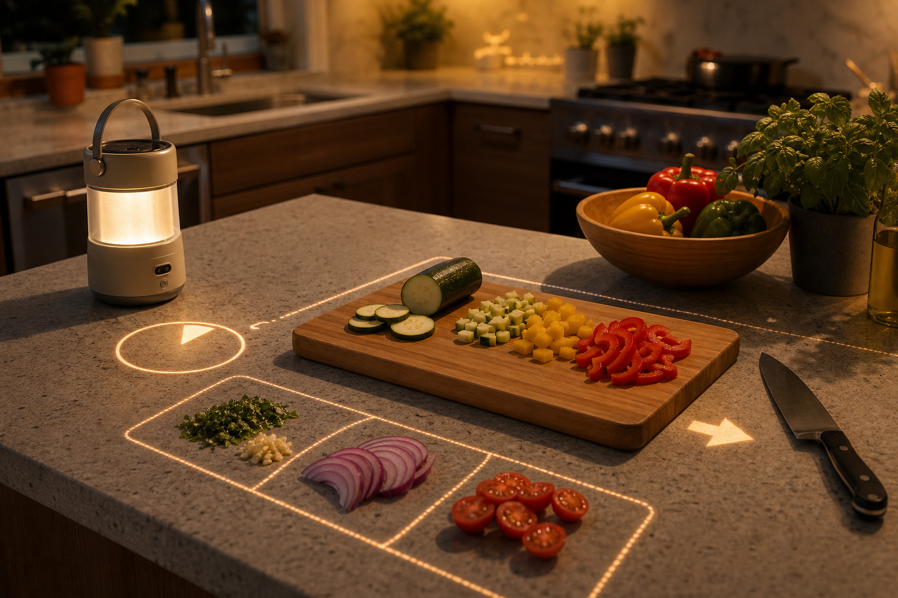
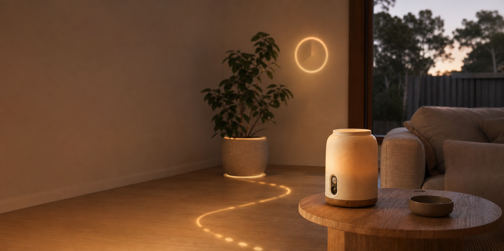
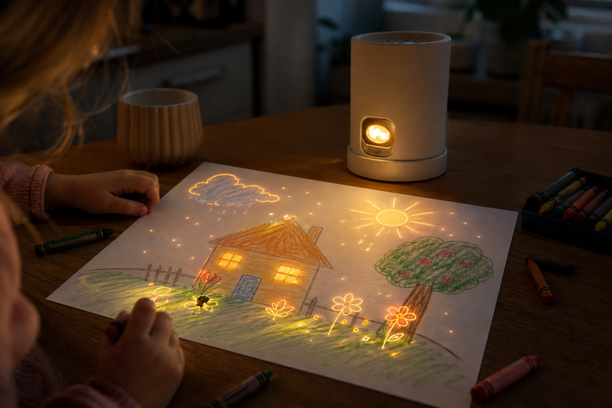
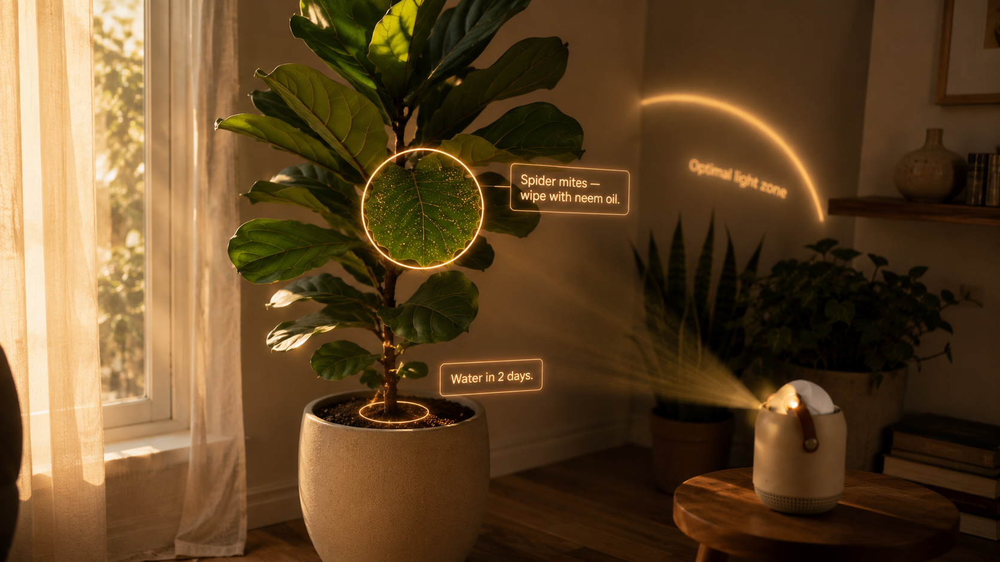
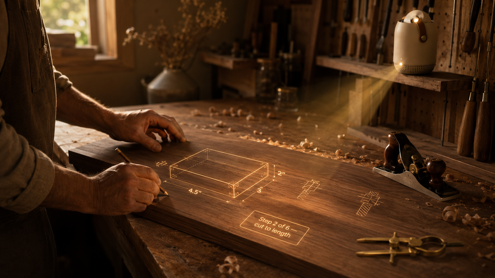
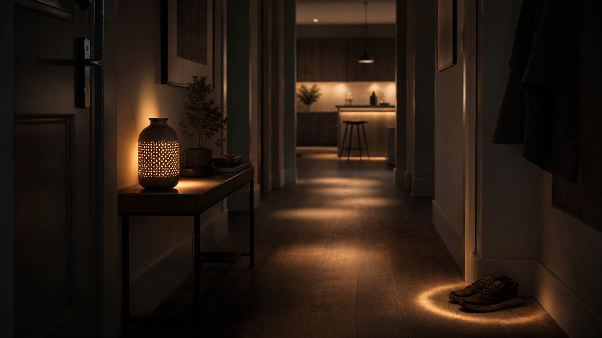
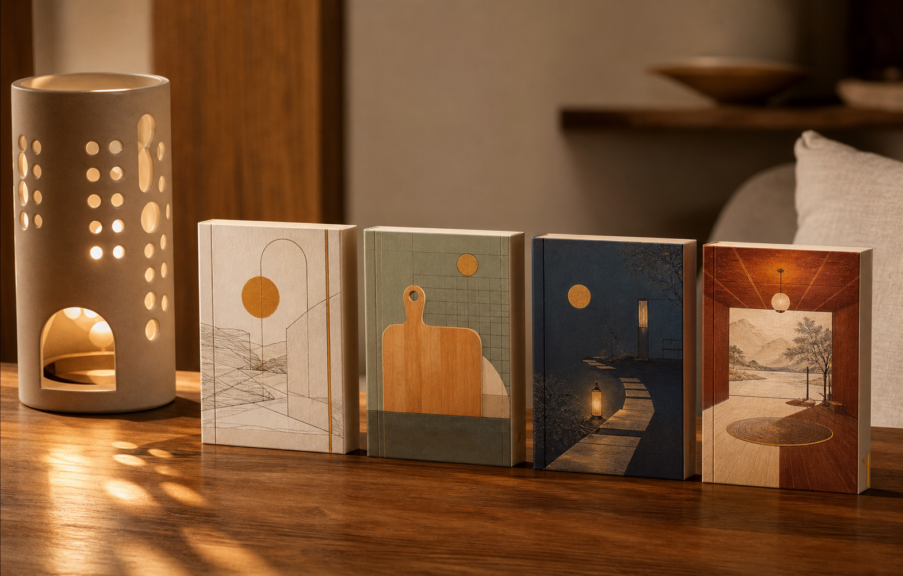
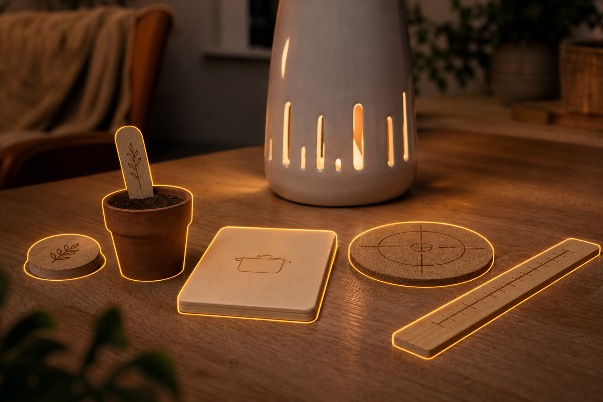
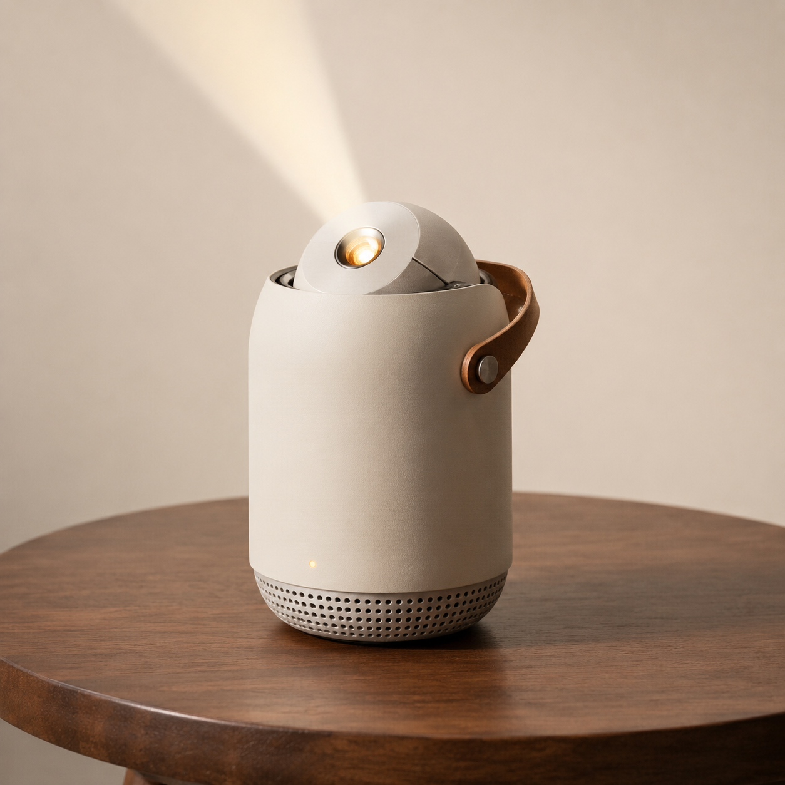

Kitchen Flow
Cook without looking away from the counter.
Cut lines, ingredient zones, timers, and the next step appear on the surface where the task is happening.

AI x light, grounded in physics
WISP is a local AI lantern. It sees the room, chooses the surface, then projects useful light directly onto the counter, page, wall, plant, workbench, or floor.
This is not a hologram product. The magic is surface intelligence: knowing where light belongs, warping it correctly, and making it useful in the moment.
Plain use cases
Start with obvious daily jobs. If these are not useful, the bigger fantasy does not matter.

Kitchen Flow
Cut lines, ingredient zones, timers, and the next step appear on the surface where the task is happening.

SketchWorld
The paper lights up with motion, color, and story beats. Nothing floats in the air.

Object memory
Plant care, misplaced object hints, and maintenance reminders land beside the object.

Workbench
Measure here, cut here, place this next. The manual disappears into the workbench.

Quiet House
Night paths, gentle wake lighting, ambient zones, and small signals without another screen.
Experience packs
A pack gives the AI taste, assets, prompts, rules, projection templates, and safety boundaries. The AI personalises inside a designed world instead of inventing everything from scratch.

Why packs exist
“Make bedtime better” or “help me cook” needs repeatability. Packs make WISP feel modular, collectible, and safe while still leaving room for AI personalization.
Drawing analysis, paper projection templates, story prompts, animation loops.
Recipe state, ingredient zones, cut lines, timer rings, safety constraints.
Night paths, wake routines, ambience, object memory, low-brightness rules.
Ceiling scenes, floor stages, character assets, narration style, pacing.
Physical objects
WISP should work with ordinary rooms first. Physical objects are optional modules that make some experiences more reliable, tactile, and giftable.


The device
WISP has to feel like a home object first. The computer disappears into the ritual: place it down, speak naturally, and the room gets a layer of useful light.
Technology
This is the engineering work: perception, calibration, rendering, latency, safety, and feedback.
Detect surfaces, people, hands, objects, and lighting conditions.
Decide where the light belongs and whether the request is safe.
Projection-map the output so it lands correctly on the real surface.
Use camera feedback to correct brightness, placement, and timing.
The hard part is not “AI makes images.” The hard part is making generated behavior physically useful: selecting surfaces, keeping latency low, calibrating the camera/projector pair, and making the experience repeatable.
Prototype list
Use this page to ask people which use case they would actually pay for first. That answer decides the prototype.
Request noted. The next question is which use case deserves the first working prototype.